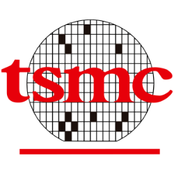

ผ่าธุรกิจ TSM (TSMC) — โรงหล่อของโลก AI, คูเมืองที่ลอกไม่ได้ และหางเสี่ยงชื่อ Taiwan

ถ้าจะมีบริษัทเดียวที่ "โลก AI ขาดไม่ได้จริงๆ" บริษัทนั้นไม่ใช่คนออกแบบชิป แต่คือคนที่ ผลิตชิปให้ทุกคน — TSMC คือโรงหล่อ (foundry) ที่ล้ำหน้าที่สุดในโลก ที่ทุก AI accelerator ของ Nvidia, ทุกชิปของ Apple ต้องวิ่งผ่าน นี่คือ deep-dive ของธุรกิจ คุณภาพหายาก ที่มาพร้อมหางความเสี่ยงหนึ่งเดียวที่ hedge ไม่ได้
ตัวเลขอ้างอิง 20-F FY2025 (ปีปฏิทิน, สกุล NT$ แปลงที่ NT$31.37 = US$1) และ earnings call ไตรมาส 1 ปี 2026 (สิ้นสุด มี.ค. 2026) เป็นบันทึกการเรียนเพื่อการศึกษา ไม่ใช่คำแนะนำซื้อขาย
ปรับปรุง 10 ก.ค. 2026: เพิ่มภาพ 3 ฉาก — ตามเงิน ฿100 เดินทางผ่านงบแบบโรงหล่อ, ภาพตัดขวาง CoWoS (คอขวดที่สองของ AI), และแผนที่ความเสี่ยงไต้หวัน — ตัวเลขอ้างอิงชุดเดิม
1. ธุรกิจนี้หาเงินจากอะไร
TSMC เป็น dedicated foundry — รับจ้างผลิตชิปตามดีไซน์ของลูกค้า โดย ไม่ออกแบบชิปเอง ไม่แข่งกับลูกค้า โมเดลนี้สำคัญมาก เพราะมันทำให้ Apple, Nvidia, AMD กล้าเอาดีไซน์ลับสุดยอดมาให้ผลิตโดยไม่กลัวโดนก๊อป TSMC จึงกลายเป็น "โรงงานกลาง" ของ อุตสาหกรรมชิปทั้งโลก
จุดที่ทำให้ต่างจากโรงงานทั่วไปคือ TSMC ครอง leading-edge (โหนดเล็กสุด ล้ำสุด) เกือบเบ็ดเสร็จ — โหนด ≤7nm คิดเป็น 74% ของรายได้ wafer (3nm 24%, 5nm 36%, 7nm 14%) และ 2nm เพิ่งเข้า volume ปลายปี 2025 พอเป็นเจ้าเดียวที่ทำชิปแรงสุดได้ในปริมาณมาก ใครอยากได้ชิป ที่ดีที่สุดก็ต้องมาที่นี่ — เป็น toll bridge (ด่านเก็บค่าผ่านทาง) ของยุค AI
รายได้แยกตาม platform (FY2025):
- HPC รวม AI (~58% ของรายได้, +48% YoY) — เครื่องยนต์หลักและโตแรงสุด
- Smartphone (~29%, +11%) — ฐานเดิมที่ยังโตเรื่อยๆ
- IoT ~5% · Automotive ~5% · ที่เหลือ ~3%
2. Moat: คูเมืองอยู่ตรงไหน (และทำไมลอกไม่ได้)
นี่คือธุรกิจที่ moat แข็งระดับหายาก — ไม่ได้มาจากอย่างเดียว แต่ซ้อนกันหลายชั้น:
- Process power + scale ที่ลอกไม่ได้ใน 5–10 ปี — การทำโหนดเล็กลงเรื่อยๆ ต้องสะสม know-how + yield จากการผลิตจริงปริมาณมหาศาล คู่แข่ง (Intel, Samsung) มีเงินแต่ตามไม่ทัน เพราะ lead มันทบต้น ยิ่งผลิตเยอะยิ่ง yield ดี ยิ่ง yield ดียิ่งได้ลูกค้า
- Switching cost สูงมาก — ลูกค้าฝัง design flow ลึกกับกระบวนการของ TSMC การย้ายโรงงานกลางโปรเจกต์ = ต้อง re-validate ทั้ง flow + เสี่ยงพลาดตอน tape-out (ต้นทุนพลาดหลายล้านดอลลาร์ต่อรอบ) ลูกค้าจึงไม่ค่อยกล้าเปลี่ยน
- Scale economies — ยิ่งชิปซับซ้อน (AI accelerator, chiplet, 2nm, 3DIC) ยิ่งต้องพึ่ง automation + capacity ที่มีแต่ TSMC ลงทุนไหว (capex $40B+/ปี)
ผลลัพธ์ที่พิสูจน์ว่า moat จริง: ROIC ~48% (เทียบ WACC ~9–10% = สร้าง economic value มหาศาล) ทั้งที่เป็นธุรกิจ capital-intensive และที่สำคัญ — โตมาแบบ organic ล้วน (goodwill เพียง ~NT$5.9B หรือ ~$188M = แทบไม่ซื้อใครมาต่อ) ต่างจากบริษัทที่โตด้วยการไล่ซื้อกิจการ
3. ตัวเลขบอกอะไร — operating leverage ระดับโลก
จุดที่สวยที่สุดของงบ TSMC คือ margin ขยายขึ้นพร้อมกับรายได้ที่โตแรง — เป็นสัญญาณของ pricing power + scale ที่ของจริง:
| ตัวชี้วัด | FY2023 | FY2024 | FY2025 |
|---|---|---|---|
| รายได้ (NT$ พันล้าน) | 2,161.7 | 2,894.3 | 3,809.1 |
| เติบโต YoY | — | +33.9% | +31.6% |
| Gross margin | 54.4% | 56.1% | 59.9% |
| Operating margin | 42.6% | 45.7% | 50.8% |
| Net margin | 39.4% | 40.0% | 44.6% |
| EPS (NT$) | 32.85 | 44.67 | 65.47 |
| FCF (NT$ พันล้าน) | 292 | 870 | 1,003 |
FY2025 รายได้ US$121.4B (+31.6%), กำไรสุทธิ US$54.1B, FCF ~US$32B — และทั้งหมดนี้เกิดทั้งที่ลงทุน capex สูงถึง ~33% ของรายได้ ($40.6B ในปี 2025) ยังมีเงินสดสุทธิ (net cash) เหลือ ~$65B งบดุลแกร่งมาก D/E แค่ 0.18x
ตารางอ่านยาก? ลองตามเงินก้อนเดียวเดินทางแทน — ทุก ฿100 ที่ Nvidia/Apple จ่ายค่าผลิตให้ TSMC ในปี FY2025 มันไหลผ่าน "โรงหล่อ" แบบนี้:
ไตรมาสล่าสุด (Q1 FY2026) ยิ่งโชว์ของ: รายได้ $35.9B, gross margin 66.2% ทำสถิติสูงสุด, operating margin 58.1%, ROE 40.5% โดย HPC ขึ้นเป็น 61% ของรายได้ จุดที่ต้องระวัง (จะพูดในข้อ 6) คือ 66% นี้คือ margin ที่ utilization peak + FX เอื้อ — ไม่ใช่ระดับที่ยืนได้ตลอด
4. AI คือ engine จริงแค่ไหน
คำว่า "หุ้น AI" ถูกใช้เกร่อจนเฝือ แต่กับ TSMC มันวัดได้จากงบจริง ไม่ใช่แค่เล่าฝัน: HPC (ที่รวม AI) โต +48% YoY และเป็น 58% ของรายได้แล้ว ผู้บริหารระบุว่า AI accelerator จะโต CAGR ระดับ 50 กว่า% ไปถึงปี 2029 และ guide รายได้ทั้งปี FY2026 โต >30% (สกุล USD) — ปรับขึ้นจากเดิม
สัญญาณยืนยันความต้องการ: N3 ขยาย capacity ผิดปกติ (ปกติโหนดที่เริ่มแก่จะไม่เพิ่ม) เพื่อรับงาน AI, N2 ramp ดี, capex ปี 2026 guide $52–56B (ขยับไปฝั่งสูง) Q2 guide รายได้ $39.0–40.2B (+32% YoY) gross margin 65.5–67.5% เครื่องยนต์ AI ยังเร่งเต็มที่
และคอขวดของยุค AI ไม่ได้อยู่แค่ที่การพิมพ์ลายวงจร — ชิป AI สมัยใหม่ต้องประกอบ แบบพิเศษด้วย: เอา GPU die มาวางเคียง HBM (แรมซ้อนชั้น) บนแผ่นซิลิคอนเชื่อม (interposer) เทคโนโลยีนี้ชื่อ CoWoS และ TSMC ก็เกือบผูกขาดเหมือนกัน — ผู้บริหารบอกใน call ว่ากำลังผลิต advanced packaging "ตึงมาก" ต้องดึง OSAT มาช่วย และกำลังพัฒนา CoPoS รุ่นถัดไป:
5. Bull Case
- Toll bridge ของ compute ทั้งโลก — leading-edge เกือบผูกขาด ทุก AI chip ต้องผ่าน TSMC; demand "extremely robust" + สัญญาณ capex จาก hyperscaler ยังบวก
- Operating leverage + pricing power ของจริง — ดัน gross margin ทะลุ 60% ทั้งที่ "ไม่ได้ขึ้นราคาแรง"; roadmap 2nm/A14 ต่อ technology lead ออกไปอีก
- คุณภาพหายากครบชุด — ROIC ~48%, organic (goodwill ~0), net cash ~$65B, ปันผลเพิ่มต่อเนื่อง (NT$22/share FY2025), R&D 6.5% รายได้, SBC แทบเป็นศูนย์ (~0.03%) นี่คือ wonderful business ตัวจริง ไม่ใช่ growth ที่เผาเงิน
6. Bear Case / จุดเปราะ
ความจริงที่ต้องพูดให้ชัด: bear ของ TSMC ไม่ใช่ "ธุรกิจแย่" (ธุรกิจดีที่สุดใน อุตสาหกรรม) — แต่เป็น bear เรื่อง หางความเสี่ยง + ราคา + วัฏจักร และหางเสี่ยงที่ใหญ่ที่สุด มองเห็นได้จากแผนที่แผ่นเดียว:
- Taiwan = หางเสี่ยงแบบ binary ที่ hedge ไม่ได้ — ฐานการผลิตหลักกระจุกในไต้หวัน เหตุการณ์ทางภูมิรัฐศาสตร์ที่กระทบ fab = thesis-breaker ถาวร ประเมินความน่าจะเป็นไม่ได้ และไม่มีสัญญาณเตือนล่วงหน้าทางการเงิน การกระจายไป Arizona/Japan/Germany ช่วยได้แต่ช้าและกด margin
- ลูกค้ากระจุก 78% (top-10) — รายใหญ่สุด 19%, อันดับสอง 17% หาก Apple ทำชิปเอง มากขึ้น หรือ hyperscaler ออกแบบ ASIC เอง/หันไป dual-source กับ Samsung/Intel = กระทบรายได้
- Capital intensity ~33% + เป็นวัฏจักร — semiconductor "highly cyclical" (คำของบริษัทเองใน 20-F) ต้นทุนคงที่สูง ถ้า utilization ตก margin จะตกแรงตาม
- Margin มี downside mean-reversion — 66% คือจุดพีค; ผู้บริหารเองบอกว่า fab ต่างประเทศจะ dilute 2–4% + N2 dilute 2–3% — margin ระดับนี้ยืนยาก
- ASP deflation เชิงโครงสร้าง + ราคาไม่มี buffer — FCF yield แค่ ~1.45%, earnings yield ~2.5% เทียบ bond 10 ปี ~4.3% ราคาให้ premium คุณภาพเต็มแล้ว
7. Kill Conditions
นี่คือส่วนที่ผมถือว่าสำคัญที่สุด — ถ้าตอบไม่ได้ว่าอะไรจะทำให้รู้ว่า "คิดผิด" แปลว่ายังเข้าใจไม่พอ สำหรับ TSMC ผมจะขาย/หลีกเลี่ยงเมื่อ:
- Leading-edge lead หลุดจริง — Intel/Samsung แย่ง design win โหนด 2nm/A16 ของลูกค้า top-5 ได้จริง หรือ gross margin หลุดต่ำกว่า 50% สองไตรมาสติดโดยไม่ใช่เพราะ FX → moat/pricing กำลัง erode
- เกิด geopolitical event กระทบ fab ในไต้หวัน — อันนี้คือ thesis-breaker แบบ binary → ขาย/หลีกเลี่ยงทันที ไม่รอดูงบ
- AI/HPC พลิกเป็น digestion + utilization ตก จน operating margin หลุดต่ำกว่า 40% → ยืนยัน cyclical downturn ของจริง ไม่ใช่สะดุดชั่วคราว
8. สิ่งที่ยังต้องขุดต่อ (What to ask)
- หางเสี่ยงไต้หวัน: ในกรอบ 10 ปี รับได้ไหมที่ thesis-breaker เป็น binary และอยู่นอกการควบคุม?
- capital intensity ~33% ถาวร — ธุรกิจนี้ "capital light" ไม่ผ่าน; ROIC 48% ชดเชยได้พอไหม?
- ลูกค้ากระจุก 78%: ถ้า Apple/Nvidia vertical-integrate หรือ dual-source downside เท่าไหร่?
- วัฏจักร: AI เป็น secular แต่ semi เป็น cyclical — ถ้าเจอ down-cycle จะถือผ่านได้ไหม?
- ที่ราคาปัจจุบัน margin of safety พอชดเชยหางเสี่ยงที่ hedge ไม่ได้หรือยัง?
9. สรุป
TSMC คือหนึ่งในธุรกิจที่ดีที่สุดในโลกแบบที่เถียงยาก — โรงหล่อที่ผูกขาด leading-edge, ROIC ~48%, operating leverage มหาศาล, งบดุล net cash, โตเอง ไม่ซื้อใครมาต่อ และเป็น toll bridge ของยุค AI ที่วัดได้จากงบจริง
แต่บทเรียนของหุ้นตัวนี้ไม่ได้อยู่ที่ "ดีหรือไม่" (ดีแน่นอน) — มันอยู่ที่ "ราคาที่จ่าย" กับ "หางเสี่ยงที่ hedge ไม่ได้" ที่ fair value การจ่ายเต็มเพื่อคุณภาพระดับนี้พอเข้าใจได้ แต่ไม่มี buffer มาชดเชยหางเสี่ยงไต้หวัน คำตอบจึงไม่ใช่ "ดีก็ซื้อเลย" แต่คือ "รู้ว่าดี แล้วรอจังหวะ/ราคาที่ให้ margin of safety" — และต้องตอบตัวเองให้ได้ก่อนว่า ถ้าหางเสี่ยงเกิดจริง เราพร้อมรับผลของมันไหม